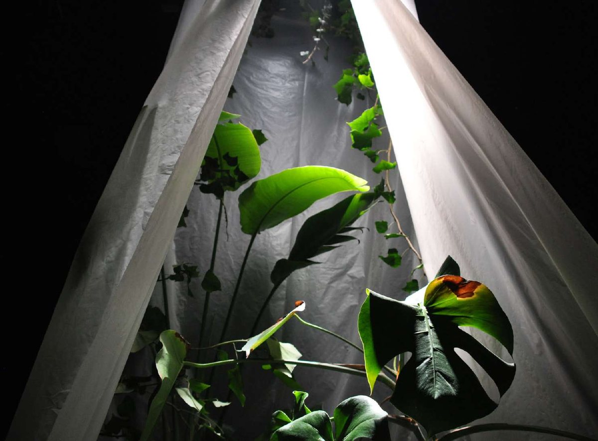

Nature 404
TL-03 / 07
Tom Lecointre

Nature 404 imagine un monde dystopique où les plantes ont pris le dessus sur les systèmes techniques, colonisant et absorbant les objets manufacturés laissés à l'abandon. En recouvrant, infiltrant et prenant racine dans ces appareils devenus obsolètes, le végétal transforme ces vestiges en supports de nouvelles formes de vie.
L'installation met en scène un renversement : ce qui relevait autrefois de la domination technologique devient un substrat pour le vivant. Le projet souligne la défaillance d'un modèle fondé sur la maîtrise et l'exploitation, incapable de s'adapter à ses propres conséquences. Entre disparition et régénération, voici un paysage spéculatif où les frontières entre nature et artefact s'effacent, laissant apparaître un monde recomposé à partir des ruines du précédent.